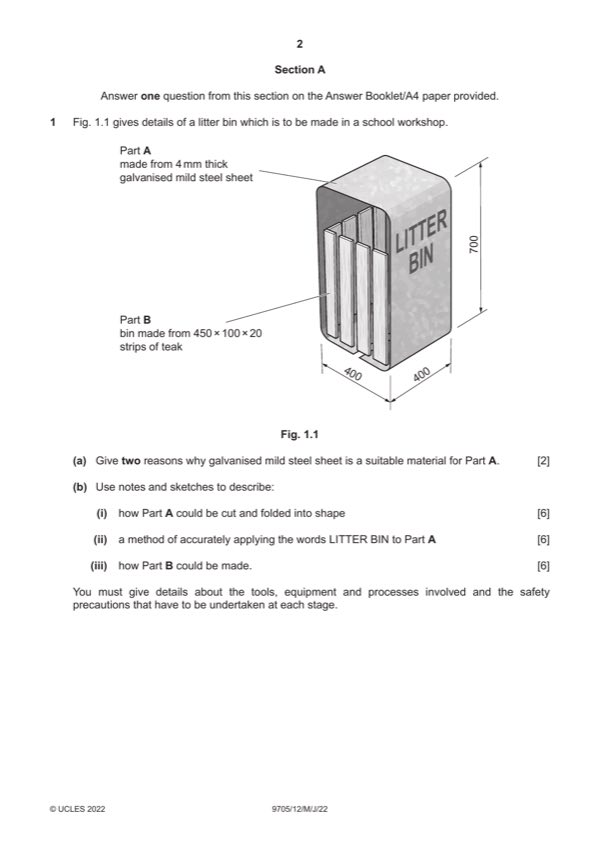

Question 1

Original paper page 2
Part 1(a) — solution
Exemplar answer 2 AOVR including:
Will not rust [1] Does not require a finish
Does not require maintenance [1]
0–2
Mark points
- Include the ideas shown in the solution above.
Part 1(b)(i) — solution
Sketches and/or notes show: 6
Cutting to shape and Folding
Suitable method [3] e.g. guillotine, grinder...and then folding
bars/press, heat and fold
Tools, equipment or processes [2]
Safety precaution [1]
0–6
Mark points
- Include the ideas shown in the solution above.
Part 1(b)(ii) — solution
Sketches and/or notes show: 6 Accept hand or CNC methods.
Method and application
Suitable method [1] e.g. painting, vinyl lettering, stencil...
Explanation of method [0–2]
Tools, equipment or processes [0–2]
Safety precaution [1]
0–6
Mark points
- Include the ideas shown in the solution above.
Part 1(b)(iii) — solution
Sketches and/or notes show: 6
Method and construction
Suitable method [1] e.g. assembled with screws...
Explanation of method (sides and base) [0–2]
Tools, equipment or processes [0–2]
Safety precaution [1]
0–6
2022 Page 4 of 21
9705/12 Cambridge International AS & A Level – Mark Scheme May/June 2022
Guidance
Mark points
- Include the ideas shown in the solution above.